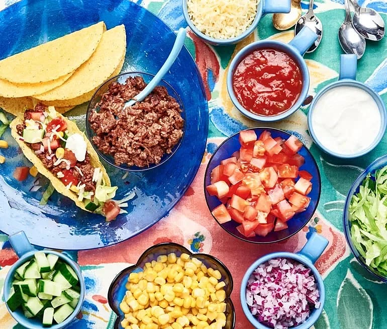

Tacos

Description
Tacos, beloved since the '90s, require no introduction in Sweden. Today, they come in countless variations. However, the Friday favorite remains a taco shell filled with finely chopped vegetables, ground beef, corn, and grated cheese, all topped with sour cream and a spicy salsa.
Ingredients for 4 servings
- 2 tomatoes
- 1 cucumber
- 1 large red onion
- 1 can of corn kernels
- 1 iceberg lettuce
- 500g ground beef
- 2 tablespoons oil
- 1 bag of taco seasoning
- 1 1/2 dl water
- 12 hard taco shells
- 2 dl grated cheese
- 2 dl salsa
- 2 dl sour scream
Steps
- Turn on the oven according to the instructions on the taco shell.
- Dice tomatoes and cucumber. Peel and chop the onion. Drain the corn. Shred the salad.
- Add the butter to the pan and let it melt.
- Fry the mince in the oil and season with the spice mix and stir in the water and let it cook for a few minutes.
- Place the taco shells on a baking sheet and heat them in the middle of the oven according to the instructions on the package.
-
Put the minced meat in the taco shell, then add cheese and vegetables, top with salsa and sour cream.